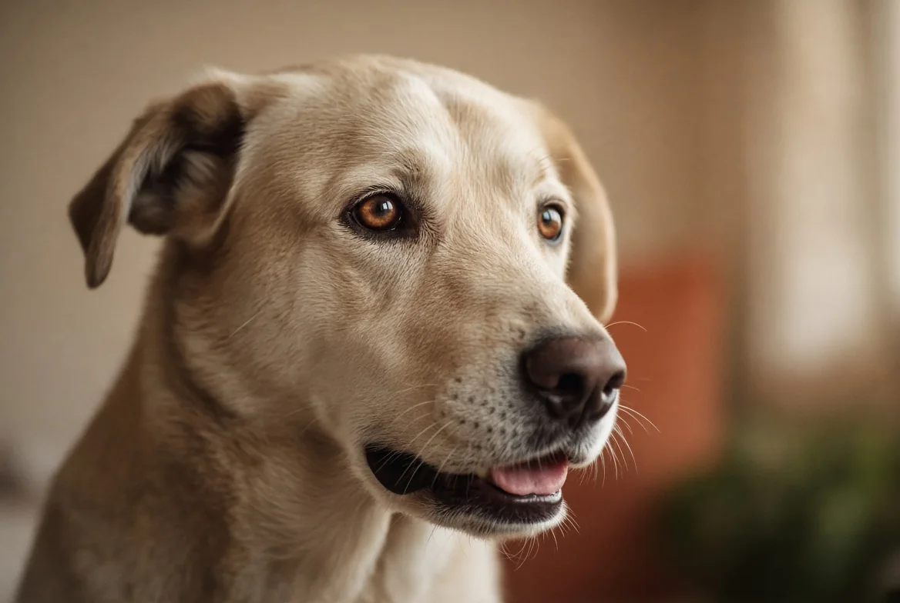
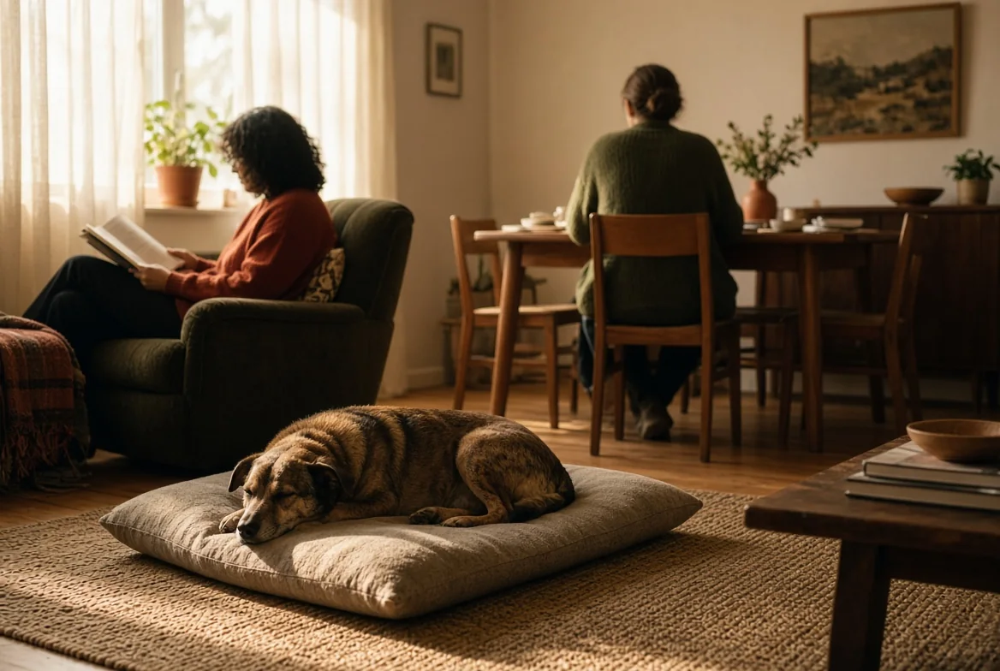
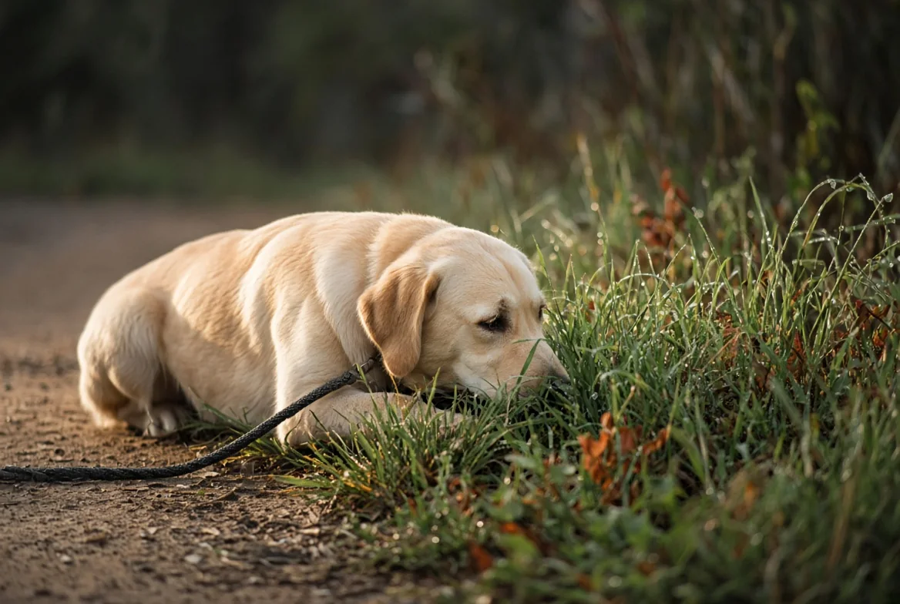

מדריך עברי לבעלי כלבים · נכתב להבנה, לא לשינון
להבין את הכלב שלך, צעד אחר צעד
רוב התוכן על כלבים נכתב למי שיש לו בעיה עכשיו. כאן זה נכתב גם למי שרוצה להבין — ולומד ללכת בעולם הזה, לא רק לכבות שריפות.
מאיפה מתחילים
ארבעת השלבים הראשונים במסלול — ההמשך נמצא בהמשך הדף.

שלב 1 · לראות לקרוא כלב עשרה סימנים שאומרים "אני לא בנוח", והסולם שמסביר למה כלבים "נושכים בלי אזהרה". זה הבסיס לכל השאר. שלב 2 · להבין
איך כלב לומד
תזמון, חיזוק, הכללה וכיבוי — למה חלק מהאילוף "לא תופס" גם כשעושים הכל נכון, כמעט.
שלב 2 · להבין
איך כלב לומד
תזמון, חיזוק, הכללה וכיבוי — למה חלק מהאילוף "לא תופס" גם כשעושים הכל נכון, כמעט.

שלב 3 · לתקשר מה בני הבית עושים לכלב מה המחקר מראה על סנכרון מתח בין כלבים לבעליהם — ומה זה אומר בפועל בבית שלכם.
שלב 4 · לחיות לחיות עם כלב השגרה שמונעת את רוב הבעיות לפני שהן נולדות — לא רק מטפלת בהן אחרי.כלים ופתרונות מהירים
קרה משהו ספציפי? מפה מתחילים.
התוכן מתאים את עצמו לכלב שלך
גור בן 9 חודשים וכלב בן 4 שעושים בדיוק את אותה התנהגות עושים אותה לרוב מסיבות שונות — אז הם לא מקבלים כאן את אותה תשובה. הזינו גיל וגזע והתוכן ישתנה בהתאם, בכל האתר.
הפרטים נשמרים בדפדפן שלכם בלבד. אין כאן שרת ושום דבר לא נשלח לשום מקום.
המסלול
לא אוסף טיפים — רצף. כל שלב נשען על הקודם.
- 1 לראות לקרוא שפת גוף, לזהות מתח ובקשת מרחב
- 2 להבין איך כלב לומד — תזמון, חיזוק, הכללה וכיבוי
- 3 לתקשר מה אתם משדרים בלי לשים לב
- 4 לחיות השגרה שמונעת את רוב הבעיות לפני שנולדו
- 5 לתקן נביחה · תוקפנות · חרדת נטישה · גור חדש · מסלול השאלות
- 6 לנוע בעולם כלבים זרים, גן כלבים, ילדים ואורחים
- 7 לאורך החיים גור, בוגר, מבוגר — מה משתנה ומתי
מה לא תמצאו כאן
אנחנו לא מוכרים אילוף, לא מקבלים עמלה מאף אחד, ולא כותבים רשימות של עשרה טיפים. כל עמוד עונה על שאלה אחת עד הסוף, מראה איך זה נראה במציאות, ומסתיים בדבר אחד קטן שאפשר לעשות היום.
ובמקום שבו יש מחלוקת מקצועית אמיתית — נגיד את זה במפורש, ונראה לכם את שני הצדדים. במקום שבו לא יודעים, נכתוב שלא יודעים.
שבעת שלבי המסלול כתובים. התוכן ימשיך לגדול.
כל התוכן באתר הוא מידע כללי בגדר המלצה בלבד. הוא אינו מהווה ייעוץ וטרינרי, אבחון רפואי או תוכנית אילוף פרטנית, ואינו מחליף בדיקה של וטרינר מורשה או ליווי של מאלף מוסמך שרואה את הכלב. במצב חירום רפואי — פנו מיד לווטרינר או לחדר מיון וטרינרי.